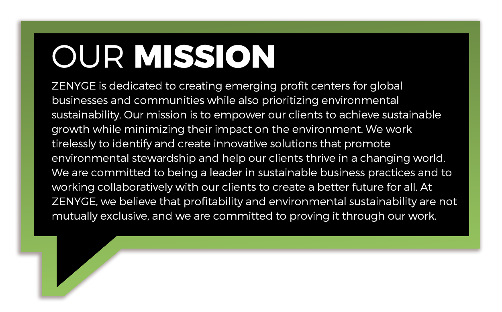
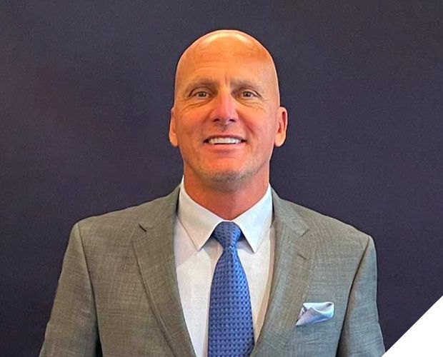

<!-- new theme section is start here -->
<div class="about-us-wrapper bgm-white">
  <div class="container" fxLayout="column" fxLayoutAlign="center center">
    <div class="p-30" fxLayout="column" fxLayoutAlign="center center">
      <div fxLayout="column" class="width-responsive text-center"
        fxLayoutAlign="center center" fxFlex="46">
        
      </div>
    </div>
    <div fxLayout="row" fxLayoutAlign="center center" class="found-div">
      OUR&nbsp;<span><b class="f-s-55">FOUNDERS</b></span>
    </div>
    <hr class="div-er">
    <br>
    <br>
    <br>
    <div fxFlex="100" fxLayout.gt-sm="row" fxLayout.lt-md="column"
      fxLayoutAlign="center center"
      fxLayoutGap="60px">
      <!-- divider lt-md less 950 gt-sm abv 950 -->
      <div fxFlex="40" fxLayout="column" fxLayoutAlign="center center">
        
        <br>
        <p class="dir">
          DIRECTOR
        </p>
        <p class="name">
          Bill Hoffmann
        </p>
      </div>
      <div fxFlex="40" fxLayout="column" class="f-s-15">
        Bill Hoffmann has more than 30+ years in developing and leading sales
        teams. He is recognized as a seven-figure earner breaking multiple sales
        records during his industry career. He specializes in corporate
        consulting helping clients worldwide develop processes and identify
        sustainable solutions to support business growth.
        <br>
        <br>
        Bill is a graduate of the University of Toledo, where he studied finance
        and marketing.
      </div>
    </div>
    <br>
    <br>
    <br>
    <div fxFlex="100" fxLayout.gt-sm="row" fxLayout.lt-md="column"
      fxLayoutAlign="center center"
      fxLayoutGap="60px">
      <div fxFlex="40" fxLayout="column" class="f-s-15">
        Jeremy Monte, JD began his career 20 years ago as a white-collar
        criminal attorney with Nixon Peabody, LLC, based in Washington, DC.
        Following September 11th and its economic aftermath, Jeremy’s strong
        desire to be an independent businessman drove him to build an
        asset-based investment advisory firm. In less than ten years, he was
        managing more than 120 million dollars on behalf of hundreds of clients.
        His exclusive clientele included large direct sales companies forging
        new and innovative tools to help both the company and distributor deal
        with the tangles of personal finance. His journey led him to build both
        product and service-related tools for the industry, from 21 CFR 111
        product sales to merchant processing and other high-risk verticals.
        <br>
        <br>
        Jeremy specializes in high-risk merchant services and provides his
        clientele with robust and protective solutions to allow for continued
        business growth. His in-depth fraud investigative background ensures he
        is always working in favor of his clientele.
        <br>
        <br>
        Jeremy holds the degree of Juris Doctor from the Catholic University
        Columbus School of Law, Washington, D.C., and a Bachelor’s degree in
        Political Science from St. John Fisher College, Rochester, NY. While in
        law school, Jeremy worked at the Supreme Court of the United States as
        an administrative law clerk.
      </div>
      <div fxFlex="40" fxLayout="column" fxLayoutAlign="center center">
        
        <br>
        <p class="dir">
          DIRECTOR
        </p>
        <p class="name">
          Jeremy Monte, JD
        </p>
      </div>
    </div>
    <br>
    <br>
    <br>
  </div>
</div>